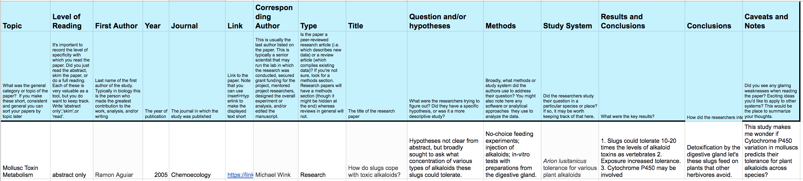

A process for developing a specific scientific question
Once you have a general topic in mind, the basic process for developing a specific scientific question is as follows:
Review the literature about your topic. It's just fine to start with Wikipedia or a news article. It might seem backwards to read when what you want to do is write down a specific question and hypotheses. I promise, however, that if you immerse yourself in what's already known about a topic, questions and ideas will start to emerge. I talk more about some specific ways you can do a simple mini literature review in a very short amount of time below.
Talk with researchers in the area. Once you have done your mini literature review and have some idea of what is known about your topic, it can be helpful to bring a list of brainstormed ideas to someone working in that area. If you are taking a class, you might bring them to office hours or schedule a meeting with the instructor.
Try talking your ideas out with others who are at a similar stage. If you find a particular question is easy to explain to others in a way that they clearly understand, that may be a sign that the question really is a clear and interesting one.
Conducting a literature mini-review
Before you spend too much time developing a bioinformatic project, you want to get some sense of what is already known about that topic. Let's do that for the topic that you picked up above.
Finding peer reviewed-studies
When doing bioinformatics, we want to focus on peer-reviewed scientfic publications. These are publications that have been read over and approved by several other scientists working in similar areas. The peer-review process is not perfect, but does tend to filter out many very poorly conceived or executed experiments, so in general you will find higher quality results if you look for peer-reviwed studies than if you do a general internet search.
Two common resources for finding peer-reviewed studies on your topic are Google Scholar and the National Center for Biotechnology Information (NCBI)'s PubMed search engine.
Exercise: Build a table of studies for your mini-literature review
I am very lazy. Just really abysmally lazy. However I also like to do a good job on projects that I'm pursuing. One way to do that is by getting good at not wasting effort. You can start right now as you begin your literature review. Even though your first steps might feel preliminary, getting organized now will save a ton of effort later on.
So here's what I recommend. Set up a table of studies that address your question. Look up at least 10 peer-reviewed studies using Google Scholar or PubMed search engine that look interesting and address your topic. In Google scholar, papers will by default be sorted in part by their number of citations (how often other papers have referenced them). This can be useful when you know nothing about a field to find papers that are actively being discussed in the literature (but note that any given paper might be cited a lot because it is really good or just because it is really controversial).
To lower the barriers to getting started right away, I've put together a table that you can use to summarize your results. Here's the link: Literature Review Template.
You can download it and fill in your literature survey in your copy. It is in Microsoft Excel format and can be loaded in either Excel or Google Sheets (which is free).
Before you do anything else, just enter the information for these studies into your table. For now, you just want to enter into the table the basic information about the paper (the last name of the first author, the year of publication, the journal, the paper's title and a hyperlink to take you back to it).
Now that you have that recorded, I'll say something that you won't hear very many instructors say: don't read the papers - or at least, don't feel that you must read each one, in full, from start to finish right now. You may very well end up reading all of them in detail if you continue to work on your question, but it is not necessary (and may be counterproductive) to try to do that right at the beginning.
Instead, read the abstract of each paper (see below). Try to look for the key pieces of information in the example table. When you enter the information, also mark your 'depth of reading' as 'abstract only'. That will be very useful later on when you have read some papers but not others.
Here's an example of how a first entry in your literature review table might look. It continues the theme of mollusc metabolism of plant alkaloids that we used in the example up above.

Once you have read a number of abstracts, then you can select a couple of papers that seem most relevant to your project to read in more depth.
Reading an abstract
Most peer-reviewed scientific papers have an abstract, which is like a version of the paper in minature. They are very, very short - from just 150 to about 500 words - so you can read a lot of them in an hour. In a good abstract, you should be able to figure out why the researchers care about the topic they're studying, what question they asked, their hypothesis (if any), the methods they used to test the hypothesis, the results of their experiment or analysis, and the broader implications for their original question. Typically each of these will be covered in just one or two sentences. Sometimes many individual results will be summarized in a single sentence.
Skimming papers
Now that you are beginning to get a sense of what's out there, you can pick 1-3 promising papers to skim. Look to understand the broad outline of what the authors did, without getting too lost in exactly how many miligrams of reagent they added to a particular reaction.
When skimming a paper, you do not necessarily need to read it in order. This is especially true if you are already familiar with a field and many common methods used in it. In that case, many readers will read the abstract, then if they understand the experimental setup jump ahead to the key figures, then back up to read the results and methods, and finally read the discussion.
As you read, pay attention to the inline citation used to support claims. If you see a claim that is interesting, it is often worth looking up the citation and adding that paper to your list. A good rule of thumb for when you are starting to have explored a particular literature is when you pick up a new paper and can recognize citations to several papers you have already encountered.
You may wish to make special note of what software of analytical methods researchers used to answer questions that are similar to those you wish to ask. You will probably need to look up methods that are unfamiliar. Often, you will see some methods used in many papers on the same topic. If you see a method used repeatedly, that's a good sign that it's worth devoting some time to understanding how it works, and seeing if it can be used in your work.
Record the key points in your literature survey so you can refer back to them later. As you skim several papers, you will hopefully find at least one that is worth reading in full.
Reading a paper in depth
Reading a paper in depth takes time. Hopefully, the process outlined up above has weeded out many papers that would be less worth this much time. However, having some key papers that you know inside and out can be a powerful thing in terms of developing your expertise in a given area of science.
Here are some pointers:
Identify the type of paper. Is the paper a review, perspective, or research paper?
Start with the big picture. You must try to understand why the investigators did each analysis they did. Some papers make this easier than others. It helps to start with the hypotheses the investigators were trying to test.
Don't forget context Often, papers make more sense in the overall context of a scientist's body of work. It may be useful to look up the senior author on Google Scholar. There you can find a sorted list of all (or most) of a scientists papers. You might also check out the lab website, as these often have an explanation of the broad questions the lab is trying to answer written in language that is broadly accessible.
Nail down key methods, terms, concepts, and acronyms. If you see a term that is unfamiliar to you when reading a paper deeply, be sure to pausing to look it up and record what you find. Then you'll recognize it in future papers. Sometimes 5 minutes on Wikipedia can save hours of confusion.
Distinguish results from interpretation. Pay lots of attention to the distinction between what excactly the experimenters (or analysts) measured vs. the hypothesis they were trying to test. Are there alternative explanations that could produce the same outcome? Often good papers will include additional analyses to try to test whether these alternative explanations apply.
It's worth reading what others are saying about the paper For papers that have been around for a while, Google scholar and similar resources are also very useful for finding other papers that discuss the paper you are reading. You can click on 'cited by' to find links to other papers that discuss this work. This can be very useful in finding what other scientists are saying about a paper. How do they summarize it's key conclusions? Do they find other results that agree with the paper? Do they critique it?
Don't forget the supplementary materials. Many papers are written with very strict page and word count limits. As such, often much useful explanation and detail ends up in Supplementary materials, which usually have to be downloaded separately from the journal website. I often find that these are extremely useful. The explanations are often somewhat less formal and more accessible, and they often include raw data files that you might end up using in your analysis.
Be specific in your critiques. If you don't like the paper, try to be very specific in what you would do differently. A constructive critique could be the basis of your own project! One good rule of thumb is to focus on criticisms that would actually be likely to change the biological interpretation. For example, if the investigators saw a strong effect with high statistical significance, then even if you wish they had collected ten times as many observations, it is also worth acknowledging that this probably wouldn't have changed the outcome - unless those extra samples differed systematically in some way from the ones the paper actually collected.
Summarize the paper in your own words. Try explaining what the paper is about and what it found succinctly and clearly out loud, as if it was your own work. Can you give a clear 1 minute overview of why this study was done, how it worked, and what it found? If so that's a good sign that you're on the right track.
Rinse and repeat!
Much of what researchers do to become experts on a topic is to repeat a process like this one. It helps to have an end goal in sight, such as writting the introduction and discussion sections of a paper about your own research.